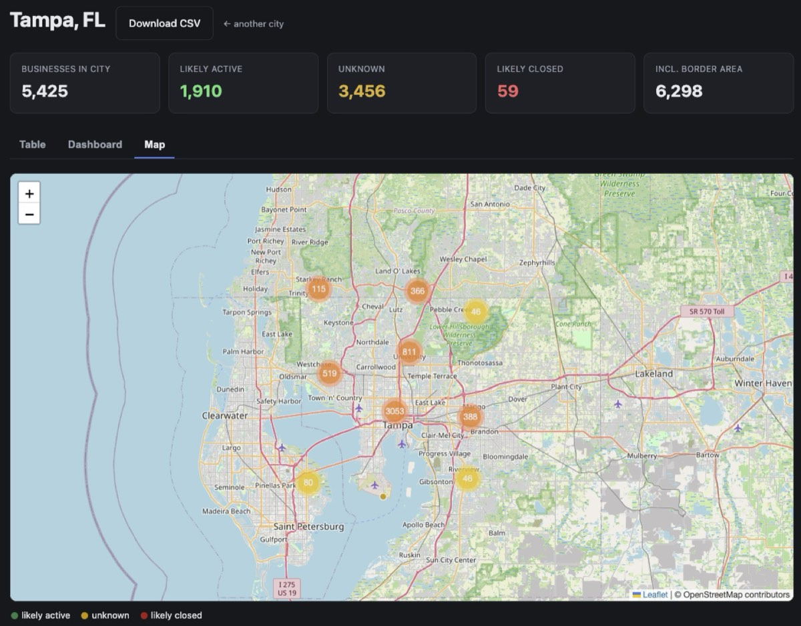

Python · Data pipeline · 2026-08
Business Finder
Type a US city, get a cleaned table of its local businesses, each labeled likely active, unknown or likely closed.

01 — The problem
Market research often starts with a simple question: how many businesses of each kind are in this city, and where? Paid lead databases answer it, but they cost money and hide how they count. I wanted the same answer from free, public data, and I wanted to know how much to trust each row.
02 — What I built
A pipeline that turns a city name into a clean business table, plus a local web app on top of it.
- Input: a city like
Tampa, FL. - Sources: GeoNames ZIP list, US Census ZIP areas (ZCTA gazetteer), OpenStreetMap via the Overpass API. All free.
- Output: a SQLite table and a CSV: name, category, address, ZIP, phone, website, plus a status label and the reason for it.
- Web app: FastAPI with three tabs: a filterable table, a Chart.js dashboard and a Leaflet map.
03 — How it was built
- 01
City to ZIP codes
Downloaded the GeoNames US ZIP list and the Census ZIP-area list once into SQLite. Many ZIPs are PO-box-only and cover no land, so each ZIP is tagged
is_realusing the Census list, with its center point and land area. - 02
Give every real ZIP a search box
Fake ZIPs are dropped. Each real one gets a map box sized from its Census land area (a circle radius clamped between 0.6 and 6 miles, padded 15% so neighbors overlap and nothing falls through the gaps).
- 03
Ask OpenStreetMap for every business
One Overpass query covers the whole city: shops, offices, crafts, healthcare, and hand-picked amenity/tourism/leisure values (restaurants yes, park benches no). Raw JSON is cached to disk, and the fetch retries with backoff when the server is busy.
Gotcha I hit: the output line has to be
out tags center meta;. Writingout center meta tags;silently drops the edit timestamps that step 5 depends on.[out:json][timeout:180]; ( nwr["shop"](bbox); nwr["office"](bbox); nwr["amenity"~"^(restaurant|cafe|bank|...)$"](bbox); nwr["healthcare"](bbox); ); out tags center meta; - 04
Clean it into one table
Pulled name, category, address, phone and website out of the raw tags; grouped 100+ OSM categories into 13 business buckets; and removed duplicates (same normalized name within about 60 meters). OSM postcodes are sometimes wrong, so a ZIP from the tags is only trusted if it is within 15 miles of the point; otherwise the nearest real ZIP is used.
- 05
Guess whether each business is still open
No free source says "this shop closed", so I combined weak signals into a score: does the website still load, did a mapper verify it recently, was the entry edited in the last 2 years, does it list opening hours and a phone plus address. Some rules win outright, such as a closed lifecycle tag or a brand that shut its US stores. Every label keeps its reason so a person can check it.
if web_ok is True: score += 2 # website loads if web_ok is False: score -= 2 # website is dead if checked_recently: score += 2 # mapper verified it if edited <= 2: score += 1 # map entry is fresh if edited >= 7: score -= 1 # untouched for years if has_hours: score += 1 if phone and address: score += 1 label = 'likely active' if score >= 2 else 'likely closed' if score <= -2 else 'unknown' - 06
One command for the whole pipeline
run.py "Tampa, FL"runs steps 1 to 5 and writes a CSV. The first run checks about 2,500 websites in parallel (about 3 minutes); everything is cached, so re-runs take about 20 seconds. - 07
The web app
A FastAPI site: type a city, watch a progress bar while the build runs in the background, then explore three tabs: Table (filter, sort, search, download CSV), Dashboard (businesses by category, status split, density per square mile by ZIP) and Map (every business as a dot colored by status).
04 — Results
Tampa, FL. Status counts are for all 6,298 businesses, border area included; the screenshot above shows the 5,425 inside city limits.
| Measure | Value |
|---|---|
| Businesses after cleaning | 6,298 |
| Inside city limits | 5,425 |
| Likely active (all 6,298) | 2,466 (39%) |
| Unknown (all 6,298) | 3,766 (60%) |
| Likely closed (all 6,298) | 66 (1%) |
| Largest group (in city) | Food & Drink, 1,526 |
The big "unknown" bucket is honest rather than a bug: most small businesses on OpenStreetMap have no website or verification date, so there is simply not enough evidence either way.
05 — What I'd do next
- Add Census population to show businesses per 1,000 residents, not just per square mile.
- Deploy it (Postgres plus a real job queue) instead of running locally.
- Spot-check a random sample of "unknown" rows by hand to measure how often the labels are right.